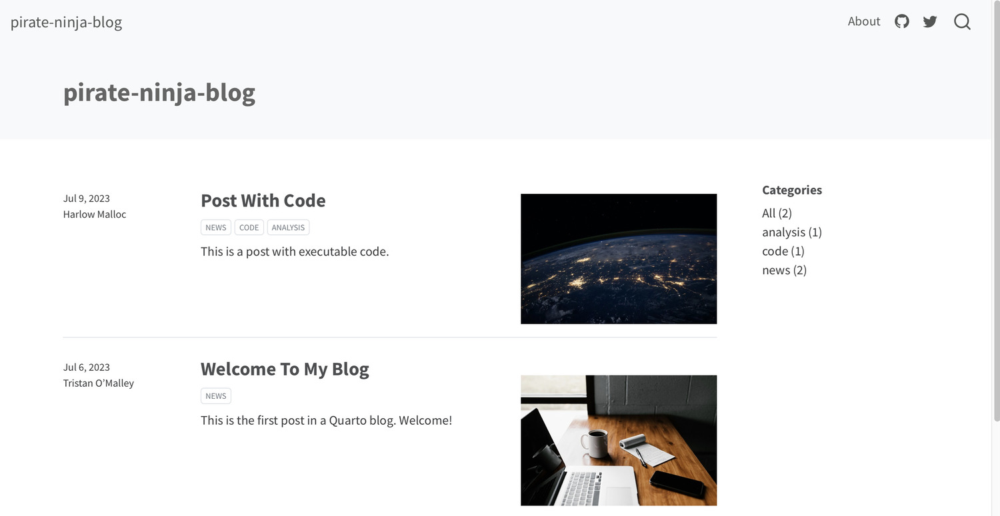
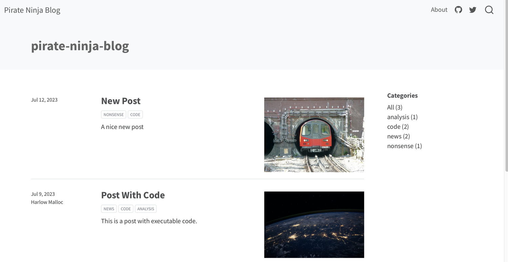
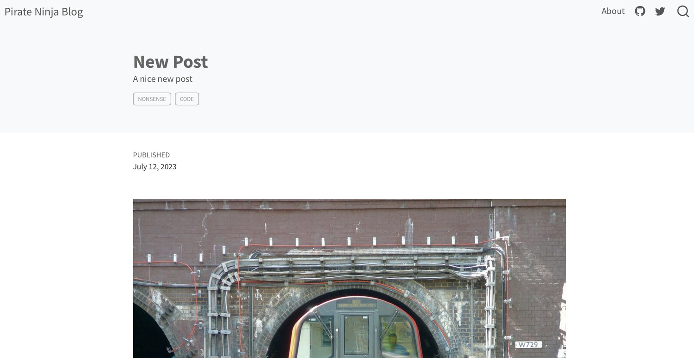

Blogging with Quarto and Jupyter: The Complete Guide
Ahh, blogging. I think we can all agree it’s probably one of the greatest forms of written communication to have ever existed.
Whats that you say? You’d like to set up your own blog? And you say you want to use a dead simple, data science friendly tech stack? And you wouldn’t be caught dead handing over your painstakingly crafted content to Medium? No worries, friend, I know exactly what you need.
Enter Quarto.
In this post we’ll set up a blog using a lightweight tech stack consisting of a terminal running quarto, git, and jupyter, and we’ll use Github Pages to host our website for free. Optionally, for a few dollars a year, we can even host our website at our own custom domain.
A quick note on how to use this post. Quarto’s documentation on blogging provides a nice high-level overview of the blogging workflow, and I refer to it and many other bits of Quarto documentation here. At the time of writing, the handful of other blog posts about setting up quarto blogs are aimed at the RStudio user. This post exists to provide a jupyter and python-centric path for you to follow through the entire setup of your new quarto blog, and to impart my opinionated recommendations about best practices.
Let’s get into it!
What is Quarto?
Quarto is a way to render plain text source files containing markdown and code in python, R, and other languages into published formats like websites, books, slides, journal articles, etc. There is clearly a lot that we can do with it, but Today, we’ll use it to make a nice looking blog out of some jupyter notebook files.
Quarto follows the familiar convention of using a project directory to house all material for a given project. The directory will include source files like jupyter notebooks or Rmarkdown files, as well as configuration files that control how output files are rendered. We can then use the quarto command line utility to perform actions like previewing and rendering within the project directory.
Instantiate your blog
Create a new Quarto project
After installing quarto fire up a new terminal and check that the install was successful by running
quarto --versionNow think of a name for your blog’s project directory; this will also be the name of its git repository. The name will have no effect on your website’s name or URL, so don’t think too hard. The quarto documentation calls it myblog, so we’ll one-up them and call ours pirate-ninja-blog. Run the following command to create it in the current directory.
quarto create-project pirate-ninja-blog --type website:blogThat command creates a directory called pirate-ninja-blog containing everything you need to render your new blog. You can preview your website by running
quarto preview pirate-ninja-blogYour local website will open in a new browser window. As you edit various aspects of your blog, the preview will update with your changes. This preview feature is so simple and so great.

Set up a git repo
Change into your project directory and we’ll start setting up your git repo.
cd pirate-ninja-bloginitialize a new git repo.
git init -b mainThe _site/ directory is where quarto puts the rendered output files, so you’ll want to ignore it in git. I also like to just ignore any hidden files too, so add the following to your .gitignore file.
.gitignore
/.quarto/
/_site/
.*For now we’ll just stage the .gitignore file for the initial commit. Eventually you’ll want to commit the other files in your project too, either now or later as you edit them.
git add .gitignore
git commit -m "Initial commit."Then follow GitHub’s instructions to add the local repo to GitHub using git. Basically just create a new blank repo on GitHub’s website, copy the remote repository url, then add the remote repo url to your local git repo.
git remote add origin <REMOTE_URL>Then you’ll be able to push any commits you make to your remote repository on GitHub by saying git push.
Understand the components of a Quarto blog
Contents of the quarto project directory
Let’s have a quick look at what quarto put inside of the project directory.
_quarto.yml
about.qmd
index.qmd
profile.jpg
posts
styles.css
_site- Quarto uses yaml files to specify configurations. The
_quarto.ymlfile specifies project-wide configurations. - Quarto’s markdown file type uses extension
qmd``. Each qmd file will correspond to a page in our website.index.qmdis the homepage andabout.qmd` is the About page. profile.jpgis an image that is included on the about page.styles.cssdefines css styles for the website.postsis a directory where we can put qmd and other documents which will be rendered into blog posts.posts/_metadata.ymlcontains configurations that apply to all documents in thepostsdirectory._siteis a directory that contains the rendered website. Whereas all the other files and directories constitute the source code for our blog,_siteis the rendered output, i.e. the website itself.
Let’s take a closer look at these components and start to make the blog yours.
Project-wide Configurations
The _quarto.yml file controls project-wide configurations, website options, and HTML document options. Options in this file are specified in yaml in a key/value structure with three top level keys: project, website, and format. The quarto website options documentation has the full list of options that you can set here. It will be very helpful to take a look at some example _quarto.yml files in the wild, such as the one from quarto.org or even the one from this blog.
Under the website key, go ahead and set the title and description for your blog.
website:
title: "Pirate Ninja Blog"
description: "A blog about pirates, ninjas, and other things"You can also customize your navbar which is visible at the top of all pages on your site. Also go ahead and set your github and twitter urls for the icons in the navbar.
Under the format key, you can also try changing the HTML theme to one of the other 25 built-in themes.
The About Page
The about.qmd file defines an About page for the blog. Go ahead and fill in your details in the about.qmd file; you can also replace the profile.jpg file with your own image. Have a look at the quarto documentation on About pages to explore more functionality. Notably, you can change the template option to change the page layout.
The Homepage
The index.qmd file defines the landing page for your website. It is a listing page which shows links to all the pages in the posts directory. For now we don’t need to change anything here.
The posts/ directory
The posts directory contains all your blog posts. There aren’t really requirements for subdirectory structure inside the posts directory, but it’s a best practice to create a new subdirectory for each new blog post. This just helps keep auxillary files like images or conda environment files organized. Out of the box, the posts directory looks like this.
posts
├── _metadata.yml
├── post-with-code
│ ├── image.jpg
│ └── index.qmd
└── welcome
├── index.qmd
└── thumbnail.jpgThere are two reasons we want to be deliberate about how we organize and name things in the posts directory. First, the vast majority of our blog’s content will live here, so we don’t want it to be a big confusing mess. Second, the directory sstructure and file naming will be reflected in the URLs to our blog posts; if you prefer tidy-looking URLs, and I know you do, then you want to use tidy directory and file names in the posts directory.
You can check how the URLs look by navigating to one of the pre-populated posts in the site preview in your browser. For instance, the welcome post’s URL would be
https://example.com/posts/welcome/When quarto renders the qmd file at posts/welcome/index.qmd it creates an output document in the website at posts/welcome/index.html. In fact the full URL to the post is,
https://example.com/posts/welcome/index.htmlbut the browser knows if you give it a URL with a path ending in a /, then it should look for the index.html file inside that directory.
So I think the best practice here is to name your new post subdirectory with the title of the post in all lower case with dashes for spaces, e.g. post-with-code. Then to force all output pages to be called index.html, you can set the output-file key in the posts/_metadata.yml file like this.
posts/_metadata.yml
output-file: index.htmlNote that alternative naming conventions are possible; notably you might want to prefix each post name with the date in yyyy-mm-dd format, so the post subdirectories sort temporally and look nice in a list. That’s the convention used in Quarto’s own blog at quarto.org, As long as you keep everything for a given post inside its subdirectory, you should be good to go with nice-looking URLs.
Publishing your blog to the web
Hosting with GitHub Pages
It’s likely that the easiest (read best) option for you is to host your blog on GitHub Pages. This is because GitHub pages is free, and since you already have your blog’s source code checked into a remote repository at GitHub, it’s very easy to set up. Quarto’s documentation on publishing to GitHub Pages outlines three ways to publish your website, but I recommend their option 2, using the quarto publish command. Once you set up your gh-pages branch as described in the documentation, you simply run quarto publish at the command line and your updates are deployed to your website.
Setting up your domain name
By default, if you choose to host with GitHub Pages, your website will be published to a url in the form https://username.github.io/reponame/. You can certainly do this; for example Jake VanderPlas’s awesome blog Pythonic Perambulations lives at http://jakevdp.github.io.
But, like me, you might want to get your own custom domain by buying, or really renting, one from a registrar. I use Namecheap. If you decide to go for a custom domain, refer to GitHub’s documentation on custom domains. You’ll also need to point your domain registrar to the IP address where GitHub Pages is hosting your website. For an example of how to do this at Namecheap, see Namecheap’s documentation about GitHub Pages
Whether you decide to use the standard github.io domain or your own custom domain, be sure to set the site-url key in your _quarto.yml file to ensure other quarto functionality works correctly. For example
_quarto.yml
website:
site-url: https://example.com/Edit: I found that after upgrading to quarto 1.3, using quarto publish to publish from the gh-pages branch obliterates the CNAME file that is created when you set a custom domain in your repository settings > Pages > Custom Domain. That breaks the mapping from your custom domain to your published website. See this disscussion thread for details. The fix is to manually create a CNAME file in the root of your project, and include it in the rendered website using the resources option under the project key in _quarto.yml. The CNAME file should just contain your custom domain, excluding any https://.
CNAME
example.comWith the CNAME file in the root of your quarto project, you can then include it in the rendered output.
_quarto.yml
project:
resources:
- CNAMEKeep in touch with your readers
RSS Feed
The RSS feed is handy for syndicating your posts to feed readers, other websites, and to your email subscribers. As described in quarto’s documentation on RSS feeds, you can automatically generate an RSS feed for your blog by first setting the value of site-url under the website key in _quarto.yml, and then setting feed: true under the listing key in the frontmatter of index.qmd. This will generate an RSS feed in the root of your website called index.xml. Once you have an RSS feed, go ahead and submit it to Python-Bloggers to have your work syndicated to a wider audience and to strengthen our little community of independent data science blogs.
Email Subscriptions
The idea here is to have a form field on your website where readers can input their email address to be added to your mailing list. Quarto’s documentation on subscriptions describes how to set up a subscribe box on your blog using MailChimp, so we won’t repeat it here. Once you have some subscribers, you can send them updates whenever you write a new post. You could do this manually or, in my case, set up an automation through MailChimp which uses your RSS feed to send out email updates to the list about new posts.
Analytics
As a data enthusiast, you’ll likely enjoy collecting some data about page views and visitors to your site. You might be tempted to use Google Analytics to do this; indeed quarto makes it very easy to just add a line to your _quarto.yml file to set it up. Unfortunately, in this case, going with the easy and free solution means supporting Google’s dubious corporate surveillance activities. Be a conscientious internet citizen and avoid using Google Analytics on your blog. Fortunately, there are numerous privacy-friendly alternatives to Google Analytics. For this blog I’m self-hosting umami analytics, which might warrant its own post in the future.
More humbly suggested best practices
Using conda environments for reproducibility
As you know, it’s a good practice to use an environment manager to keep track of packages, their versions, and other dependencies for software in a data science project. The same applies to blog posts; especially if you’re using unusual or bleeding-edge packages in a post. This will help us out a lot when we have to go back and re-run a notebook a couple years later to regenerate the output. Here we’ll use conda as our environment manager.
To be clear, I don’t bother doing this if I’m just using fairly stable functionality in standard packages like pandas, numpy, and matplotlib, but we’ll do it here for illustration. From a terminal sitting inside our post subdirectory at posts/new-post, create a new conda environment with the packages you’re using in the post.
conda create -p ./venv jupyter numpy matplotlibNote the -p flag which tells conda to save the environment to ./venv in the current working directory. This will save all the installed packages here in the post directory instead of in your system-wide location for conda environments. Note also that you’ll want to avoid checking anything in the venv directory into source control, so add venv to the .gitignore file at the root of the quarto project to ignore all venv directories throughout your quarto project.
Now whenever you work on this post, you’ll navigate to the post subdirectory with a terminal and activate the conda environment.
conda activate ./venvThen you can fire up your jupyter notebook from the command line, and it will use the active conda environment.
Since we don’t want to check the venv directory with all its installed libraries into source control, we need to create an environment.yml file from which the environment can later be reproduced. With the local conda environment active, run the following.
conda env export --from-history > environment.ymlThe --from-history flag tells conda to skip adding a bunch of system specific stuff that will gunk up your environment yaml file and make it harder to use for cross-platform reproducibility. This environment.yml file is the only environment management artifact that you need to check into git.
Later if you need to recreate the environment from the environment.yml file, you can use the following command.
conda env create -f environment.yml -p ./venv`Image file best practices
Let’s talk about image file sizes. The key idea is that we want images to have just enough resolution to look good; any more than that and we’re just draging around larger-than-necessary files and wasting bandwidth and slowing down page load times.
You can read all about choosing optimal image sizes, but the TLDR is that images should be just large enough (in pixels) to fill the containers they occupy on the page. In our quarto blog, the two most common kinds of images are inline images we put in the body of posts and image thumbnails that show up as the associated image for a post, e.g. in the listing on our homepage. The inline image container seems to be about 800 pixels wide in my browser and the thumbnails are smaller, so adding some margin of error, I decided to go for 1000x750 for inline images and 500x375 for the thumbnails.
I use a command line tool called Image Magick to resize image files. Go ahead and install image magick with homebrew, and let’s add some images to our new post.
For this example I’ll use a nice shot of the London Underground from Wikipedia. Save your image as image.jpg. Then use image magick to create two new resized images for inline and thumbnail use.
{kind=link}
convert image.jpg -resize 1000x1000 main.jpg
convert image.jpg -resize 500x500 thumbnail.jpg These commands do not change the aspect ratio of the image; they just reduce the size so that the image fits within the size specified.
Now move both of your new images into the post subdirectory at posts/new-post/. To specify the thumbnail image, set the image key in the post’s front matter. Be sure to also add an alt tag description of the image using the image-alt key to keep it accessible for screen reader users. Our post’s frontmatter now looks like this.
---
title: New Post
date: 2023-07-12
description: A nice new post
categories: [nonsense, code]
image: thumbnail.jpg
image-alt: "A London Underground train emerging from a tunnel"
---To include an image within the body of a post, use markdown in the post to include the image. I added a markdown cell just under the front matter containing the following.
In your preview browser window, you can see we have the thumbnail for our new post on the homepage listing.

And we also have the inline image appearing in the body of the post.

You can take a look at the source code for this blog to see some examples of including images in posts.
SEO
SEO is a huge topic, but here we’ll just focus on a few fundamental technical aspects that we want to be sure to get right. This boils down to registering with the top search engines by market share and ensuring that we’re providing them with the information they need to properly index our pages.
I checked the top search engines by global market share and as of 2023 it looks like Google has about 85%, Bing has about 8%, and the others have 2% or less each. So let’s focus on setting our site up to work well with Google search and Bing to get over 90% coverage.
Google Search Console and Bing Webmaster Tools
Google Search Console is a tool for web admins to help analyze search traffic and identify any technical issues that might prevent pages from appearing or ranking well in search. Go ahead and set up an account and register your blog in search console. You can refer to Google’s documentation on search console to guide you through setup and configuration.
Once you get set up on GSC, you can also create an account for Bing Webmaster Tools. Do this after setting up GSC because there is an option to import your information from your GSC account.
Once you’re set up with GSC and BWT, you’ll get email alerts anytime they crawl your site and detect any indexing problems. When that happens, track down the issues and fix them so your pages can appear in organic searches.
Sitemap
A sitemap is an xml document that lists all the pages on your website. It’s a map for the search engine bots that crawl the web looking for new pages to index. Quarto will automatically generate a sitemap called sitemap.xml in the root of your website, as long as you’ve filled out the site-url key in _quarto.yml. You can submit your website for indexing by providing your sitemap in Google Search Console and Bing Webmaster Tools.
Wrapping Up
Boy howdy, that was a lot, but at this point you should have a fully functioning blog, built with a minimalist, data-science-friendly tech stack consisting of quarto, jupyter, and GitHub. If you do create a blog using quarto, drop a link to it in the comments, and we can all check it out and celebrate your creation!
Comments
Quarto has build-in support for three different comment systems: hypothesis, utterances, and giscus. The good news is that these are all free to use, easy to set up, and AFAIK do not engage in any sketchy tracking activities. The bad news is that none of them are ideal because they all require the user to create an account and login to leave a comment. We want to encourage readers to comment, so we don’t want them to have to create accounts or deal with passwords or pick all the squares with bicycles or any such nonsense, just to leave a little comment. To that end, I’ve actually been working on self-hosted login-free comments for this blog using isso, but it’s a bit more involved than these built-in solutions, so we’ll have to discuss it at length in a future post.
If you prefer an easy, out-of-the-box solution, I can recommend utterances, which uses GitHub issues to store comments for each post. I used utterances for comments on the first jekyll-based incarnation of this blog; you can still see the utterances comments on posts before this one. Go check out the Quarto documentation on comments to see how to set up utterances in your project.